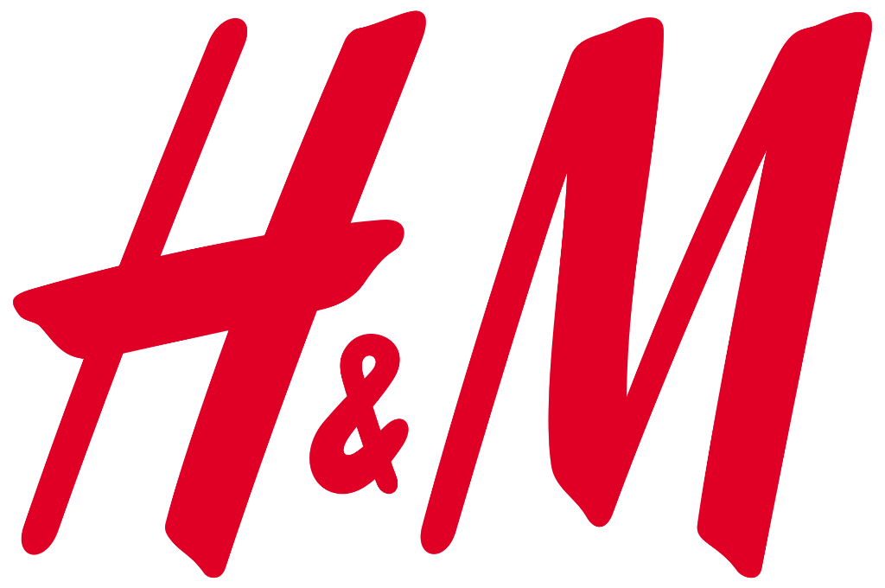
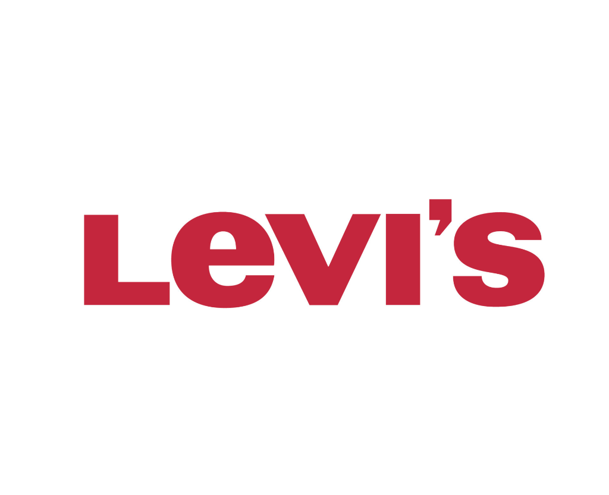
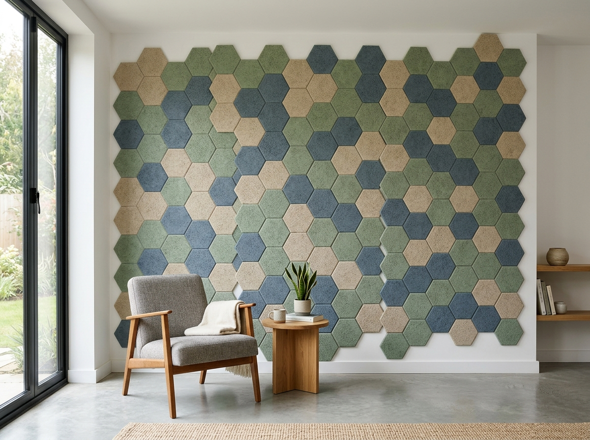
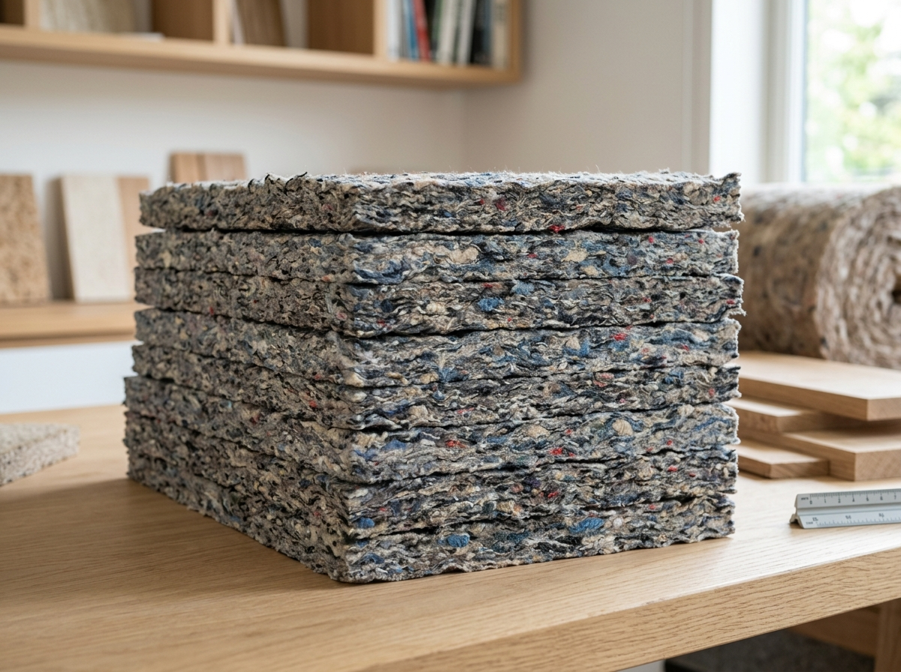
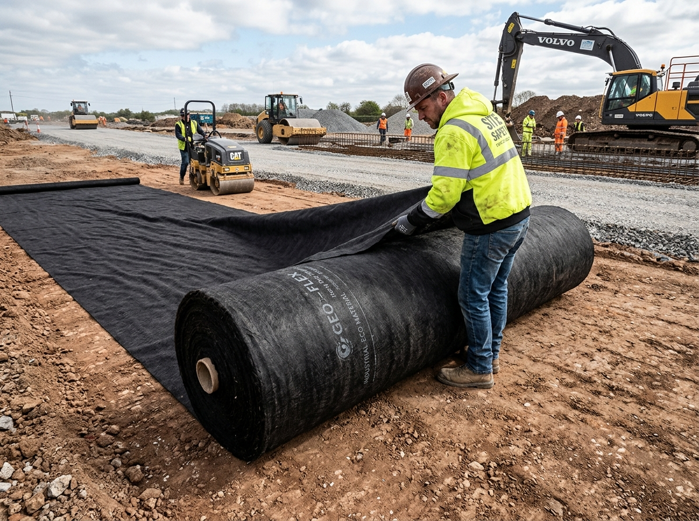

Project
Evāra
Rethink today. Reduce waste. Build a net zero tomorrow. Transforming non-reusable "end-of-life" synthetic clothes into high-value civil materials.
WHAT IS FAST FASHION?
Cheap, mass-produced clothing made from synthetic plastics that are worn a few times and quickly tossed away.
Popular Fast Fashion Brand Examples:
UNIQLO ↗
Fleece & Synthetic Basics
H&M ↗
Weekly Trend Turnover
LEVI'S ↗
Poly-Denim Stretch Blends|
Bengaluru's fast fashion waste challenge is growing. Non-reusable synthetic garments – especially polyester and blends – have no effective circular pathway. They are often treated as regular waste, burned in cement kilns or dumped in landfills, releasing carbon emissions and microplastics.
Most people only think about donating clothes in good condition, but 'end-of-life' non-reusable garments are where the fast fashion crisis truly shows its ugly side.
FAST FASHION
Cheap. Trendy. Designed with "planned obsolescence" to be replaced after a few washes, not repaired.
TEXTILE WASTE
Non-reusable garments are mixed with household waste, contaminating recyclable streams.
BENGALURU'S CHALLENGE
No standardized pathway for citizens to segregate and send synthetics for recovery.
What Makes a Garment "Non-Reusable"?
Click the T-Shirt below to cycle through the 4 stages of fabric degradation!

CURRENT DISPOSAL JOURNEY
How non-reusable synthetic garments currently travel through our city's waste ecosystem.
CLOSET
Unused, torn, or stained garments
HOUSEHOLD WASTE
Mixed general trash
WASTE FACILITY
Unaware of recovery
Inspect Destructive Fates:
A BETTER SOLUTION
IDENTIFY
Check garment tags to identify synthetic blends (polyester/nylon) and wear condition.
SEPARATE
Keep non-reusable synthetic waste separate from organic trash and wearable clothing.
RECOVERY FACILITY
Send to Hasiru Dala, Saahas Zero Waste, or Nokasa Circular segregation hubs.
LOW-CARBON PRODUCTS
Upcycled into acoustic tiles, insulation felt, geotextiles, and building boards.
UPCYCLING POSSIBILITIES

ACOUSTIC PANELS
Soundproofing tiles for office & studio walls.

INSULATION BOARDS
Thermal eco-felt boards replacing fiberglass.
FURNITURE FILLING
Resilient fibrous stuffing for cushions & beanbags.

GEOTEXTILES FOR CIVIL ENGINEERING
Mats for road stabilization & erosion control.
KNOW YOUR GARMENT
Answer a few quick questions to find the best disposal or recycling pathway in Bengaluru!
Step 1: What is the main fabric of your clothing?
Synthetic Waste Diverted From Landfills Today
Find Nearby Recovery Drop-Off Points in Bengaluru
THE NEED OF THE HOUR
Solving the fast fashion waste crisis with simple, smart choices.
The Synthetic Clothes Crisis in Bengaluru
Donating old wearable clothes is great. But when cheap synthetic clothes tear or get stained, people in Bengaluru have no choice but to throw them in regular household trash. These synthetic fabrics do not decompose, cannot be turned into cleaning rags, and end up burned in cement kilns or dumped in landfills—polluting our air, soil, and lakes with microplastics.
“How can we make it super simple for everyone in Bengaluru to separate old synthetic clothes so they can be turned into strong building materials instead of polluting our lakes and landfills?”
BENGALURU CITIZEN SYNTHETIC WASTE SURVEY
Please fill out our survey below to help shape circular textile waste policies in Bengaluru.